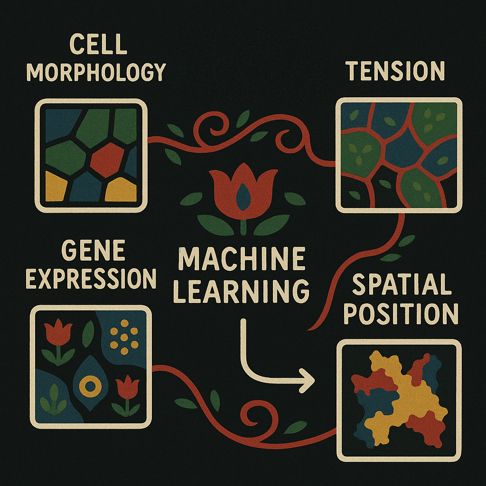
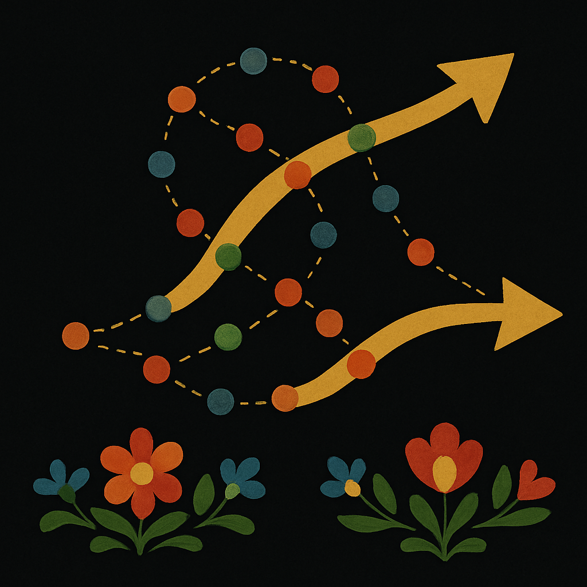
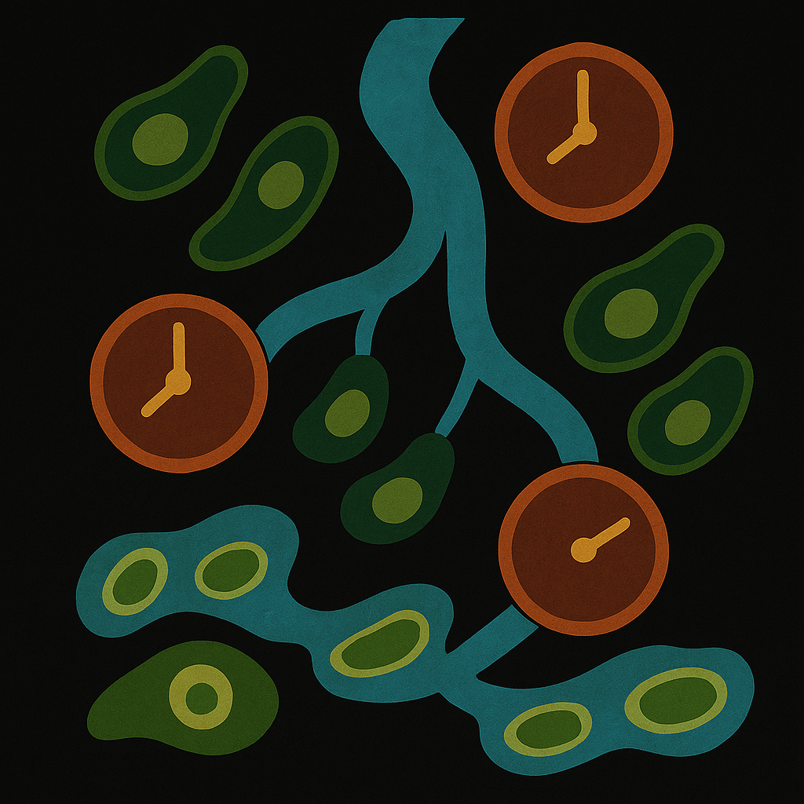
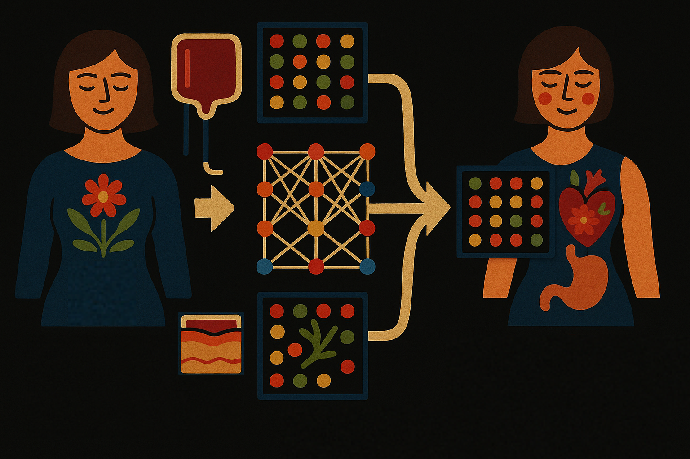

A computational pipeline for spatial mechano-transcriptomics
Adrien Hallou^, Ruiyang He^, Benjamin D. Simons, Bianca Dumitrascu

Summary : This work combines gene expression and mechanical modeling to understand how forces shape tissue development and cell behavior in space, using a new computational method applied to mouse embryo data.
Abstract : Advances in spatial profiling technologies are providing insights into how molecular programs are influenced by local signaling and environmental cues. However, cell fate specification and tissue patterning involve the interplay of biochemical and mechanical feedback. Here we develop a computational framework that enables the joint statistical analysis of transcriptional and mechanical signals in the context of spatial transcriptomics. To illustrate the application and utility of the approach, we use spatial transcriptomics data from the developing mouse embryo to infer the forces acting on individual cells, and use these results to identify mechanical, morphometric and gene expression signatures that are predictive of tissue compartment boundaries. In addition, we use geoadditive structural equation modeling to identify gene modules that predict the mechanical behavior of cells in an unbiased manner. This computational framework is easily generalized to other spatial profiling contexts, providing a generic scheme for exploring the interplay of biomolecular and mechanical cues in tissues.
Gene-level alignment of single-cell trajectories
Dinithi Sumanaweera, Chenqu Suo, Ana-Maria Cujba, Daniele Muraro, Emma Dann, Krzysztof Polanski, Alexander S Steemers, Woochan Lee, Amanda J Oliver, Jong-Eun Park, Kerstin B Meyer, Bianca Dumitrascu, Sarah A Teichmann

Summary : Genes2Genes helps compare how cells change over time by aligning their activity patterns—even when the match isn’t perfect—so we can better understand how diseases or lab-grown cells relate to real biological processes.
Abstract : Single-cell data analysis can infer dynamic changes in cell populations, for example across time, space or in response to perturbation, thus deriving pseudotime trajectories. Current approaches comparing trajectories often use dynamic programming but are limited by assumptions such as the existence of a definitive match. Here we describe Genes2Genes, a Bayesian information-theoretic dynamic programming framework for aligning single-cell trajectories. It is able to capture sequential matches and mismatches of individual genes between a reference and query trajectory, highlighting distinct clusters of alignment patterns. Across both real world and simulated datasets, it accurately inferred alignments and demonstrated its utility in disease cell-state trajectory analysis. In a proof-of-concept application, Genes2Genes revealed that T cells differentiated in vitro match an immature in vivo state while lacking expression of genes associated with TNF signaling. This demonstrates that precise trajectory alignment can pinpoint divergence from the in vivo system, thus guiding the optimization of in vitro culture conditions.
CellFlows: Inferring Splicing Kinetics from Latent and Mechanistic Cellular Dynamics
Sei Chang, Zaiqian Chen, Bianca Dumitrascu , David A Knowles

Summary : CellFlows is a new method that uses neural networks and gene expression data to trace how individual cells change over time, helping scientists understand the pace and direction of cell development with greater accuracy and clarity.
Abstract RNA velocity-based methods estimate cellular dynamics and cell developmental trajectories based on spliced and unspliced RNA counts. Although numerous methods have been proposed, RNA velocity-based models vary greatly in their biophysical assumptions, architectures, and use cases. In this work, we introduce a new architecture, CellFlows, which incorporates self-supervised neural dimensionality reduction with the flexibility of neural-based latent time estimation into a mechanistic model, improving model interpretability and accuracy. CellFlows models splicing dynamics to infer gene and context-specific kinetic rates at single-cell resolution and correctly identifies both linear and branching cellular differentiation pathways originating from mouse embryonic stem cells.
Hypergraph Factorization for Multi-Tissue Gene Expression Imputation
Ramon Viñas, Chaitanya K Joshi, Dobrik Georgiev, Phillip Lin, Bianca Dumitrascu , Eric R Gamazon, Pietro Liò
Summary: : HYFA is a machine learning method that predicts missing gene activity across tissues, helping scientists study how genes work together in different parts of the body—even when some data is missing or unavailable.
Abstract: Integrating gene expression across tissues and cell types is crucial for understanding the coordinated biological mechanisms that drive disease and characterize homoeostasis. However, traditional multi-tissue integration methods either cannot handle uncollected tissues or rely on genotype information, which is often unavailable and subject to privacy concerns. Here we present HYFA (hypergraph factorization), a parameter-efficient graph representation learning approach for joint imputation of multi-tissue and cell-type gene expression. HYFA is genotype agnostic, supports a variable number of collected tissues per individual, and imposes strong inductive biases to leverage the shared regulatory architecture of tissues and genes. In performance comparison on Genotype–Tissue Expression project data, HYFA achieves superior performance over existing methods, especially when multiple reference tissues are available. The HYFA-imputed dataset can be used to identify replicable regulatory genetic variations (expression quantitative trait loci), with substantial gains over the original incomplete dataset. HYFA can accelerate the effective and scalable integration of tissue and cell-type transcriptome biorepositories.
In silico tissue generation and power analysis for spatial omics
Ethan A. G. Baker, Denis Schapiro, Bianca Dumitrascu , Sanja Vickovic & Aviv Regev

Summary: Hypothesis testing in spatial omics requires null models—but generating these models is tricky when spatial correlations are present. This work proposes a simulation-based framework to evaluate the power of spatial experiments without violating spatial structure.
Abstract: As spatially resolved multiplex profiling of RNA and proteins becomes more prominent, it is increasingly important to understand the statistical power available to test specific hypotheses when designing and interpreting such experiments. Ideally, it would be possible to create an oracle that predicts sampling requirements for generalized spatial experiments. However, the unknown number of relevant spatial features and the complexity of spatial data analysis make this challenging. Here, we enumerate multiple parameters of interest that should be considered in the design of a properly powered spatial omics study. We introduce a method for tunable in silico tissue (IST) generation and use it with spatial profiling data sets to construct an exploratory computational framework for spatial power analysis. Finally, we demonstrate that our framework can be applied across diverse spatial data modalities and tissues of interest. While we demonstrate ISTs in the context of spatial power analysis, these simulated tissues have other potential use cases, including spatial method benchmarking and optimization.